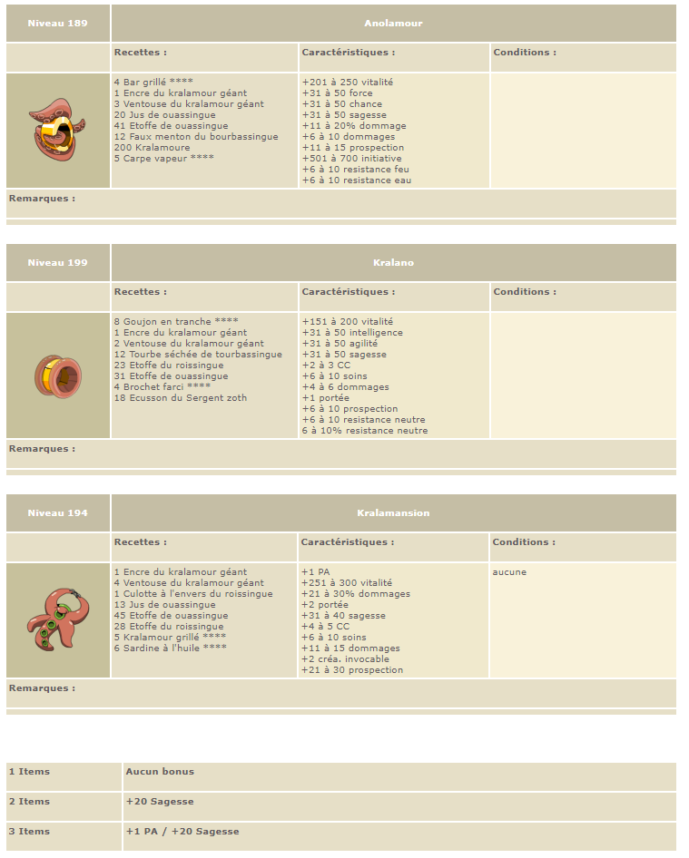
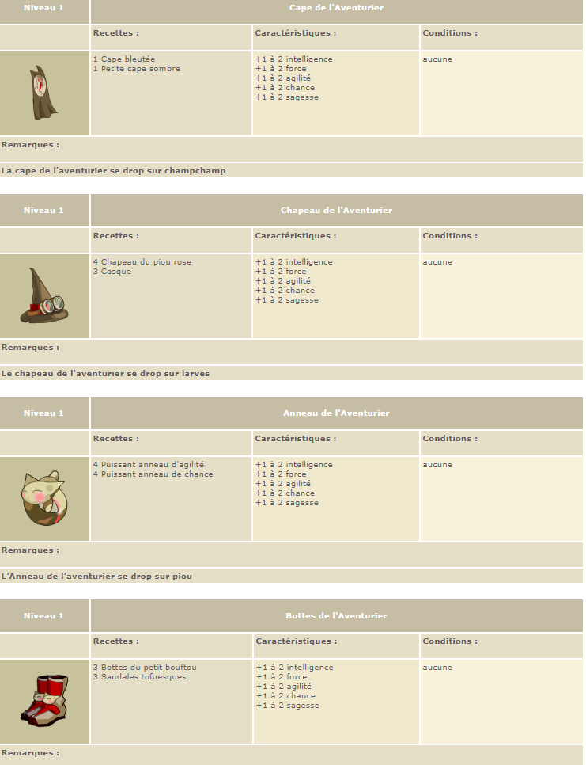
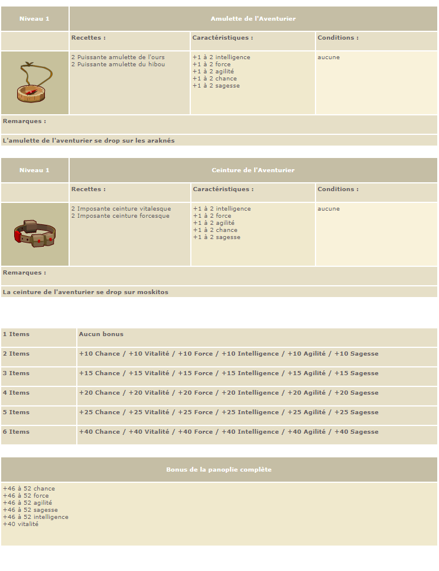
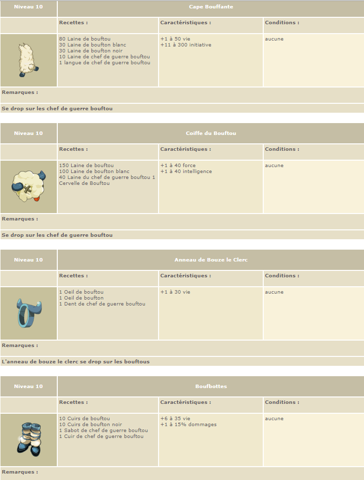
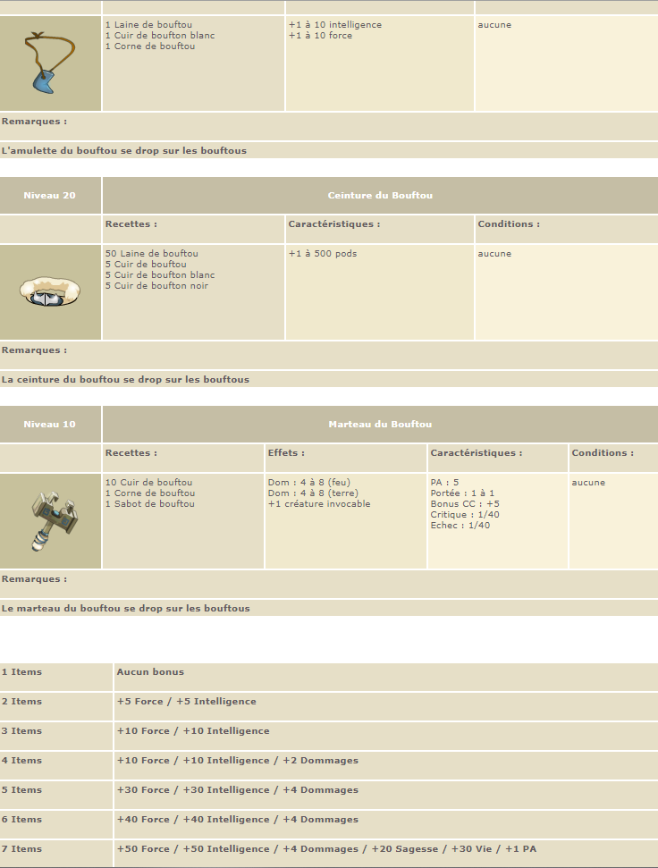

A famous website called Barbok lists all the existing items and display their stats. I would totally recommend this website for advanced players. This tutorial will more focus on items accessible in the beginning of a character progression.
To progress in the game, you character must increase its characteristics. There is two ways to increase a character's characteristics: level up or wear items. There are 9 types of items:
ring, amulet, hat, cape or backpack, weapon, boots, belt, dofuses and living object. Each item has a specialization in term of given stats: usually amulets give AP (action points), boots give MP
(movement points) and rings are usually the weakest items. This is why your character can wear two of them at the same time. As shown below, this is how your items will show up by opening the tab
"objects".
A famous website called Barbok lists all the existing items and display their stats. I would totally recommend this website for advanced players.
This tutorial will more focus on items accessible in the beginning of a character progression.
Sets are an important aspect of items in Dofus. Sets are families of items that allow the character to have bonus stats when they wear multiples items from the same set. For example, the sucker set
as shown in the next picture, is a set composed of three items: one amulet and two rings.

One one item of the set gives 0 bonus to the character. However, starting from 2 items, the more items of a set you wear, the more the bonus will be important. In this case, with 2 items, your
character earns 20 wisdom and with 3, you character earn 1 AP and 20 wisdom. The more items you wear from the same set, the more bonus you get! Especially in early levels, set bonuses are very
important for good stat optimization. This is why two sets will be recommended in this tutorial.
This is probably the most powerful set for its level. This set can be equipped from the level 1! Individually, each item of the set does not give a lot of stats to the characters but when a
character wears the whole set, the set bonus is very important. Let us take a closer look at this set.


This set bonus is very important at this level because it gives 40 wisdom points. Wisdom points are important in early levels because they allow a character to earn more experience
after fights and to level up faster. The other stats provided by the bonus are also important at this level: it allows the character to be more tanky and to deal more damage to enemies.
This set is recommended for characters below level 25 because it is relatively accessible, not expensive and viable for these levels.
When you will reach a higher level, the young adventurer set will slowly be less impacting during fight. From the level 10, your character can already change his items. The Gobball set is perfect
for that part of your adventure. This set is very strong compared other sets at this level. When the set is totally equipped, the character gains 1 AP. Let us have a closer look on this set.


However, this set has an inconvenient. Unlike the young adventurer set that matches with every character and element, the Gobball set only gives stats in intelligence (fire) and strength (earth).
For classes like Xelor who scales in wind element, this set can be useless. This set is very accessible because you can drop these items on monsters of the Gobball family.


{% endblock %}